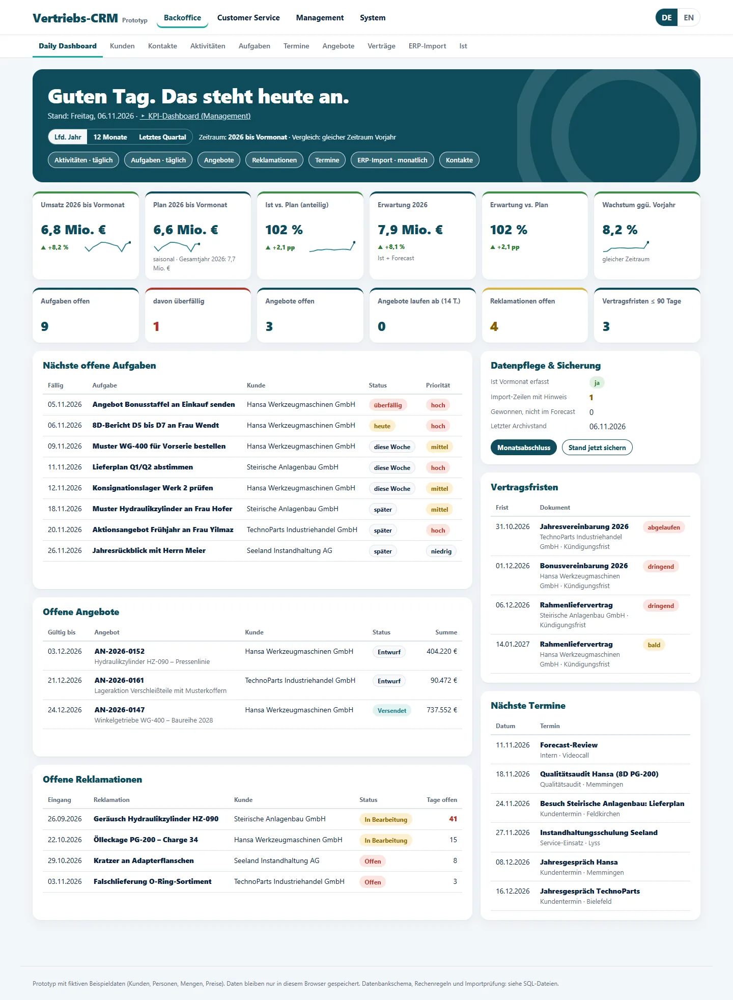
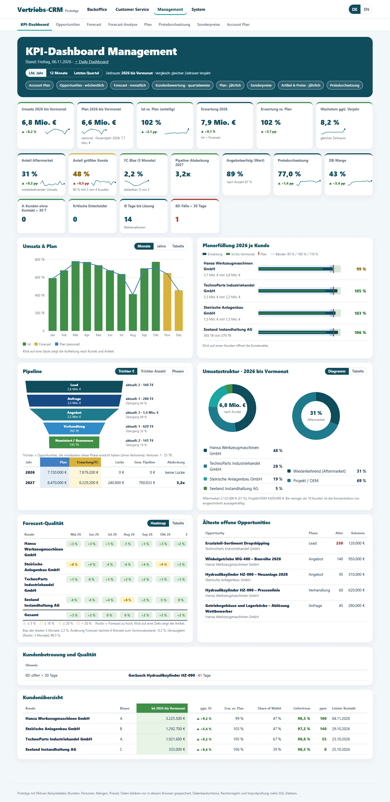
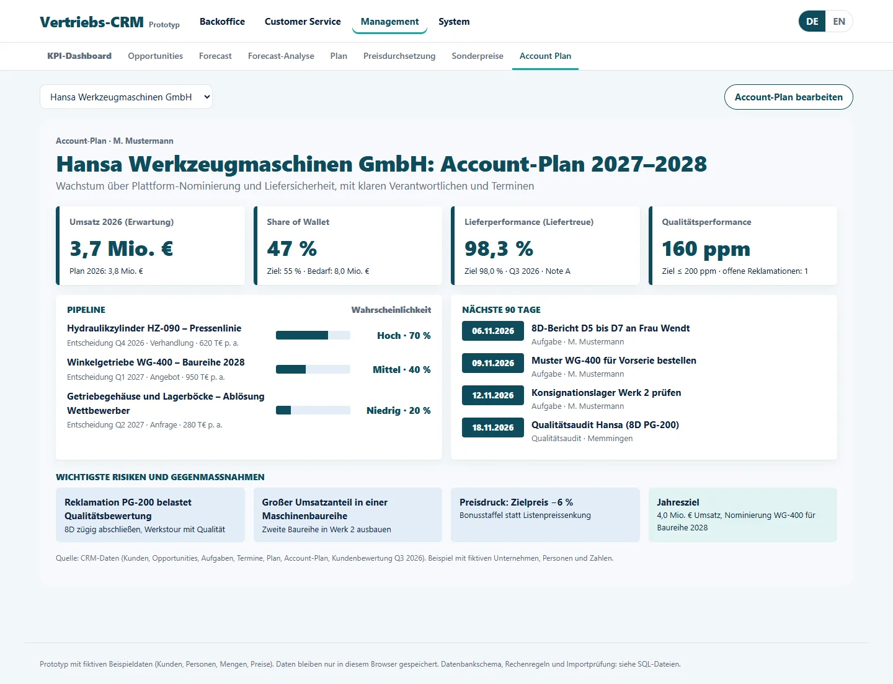
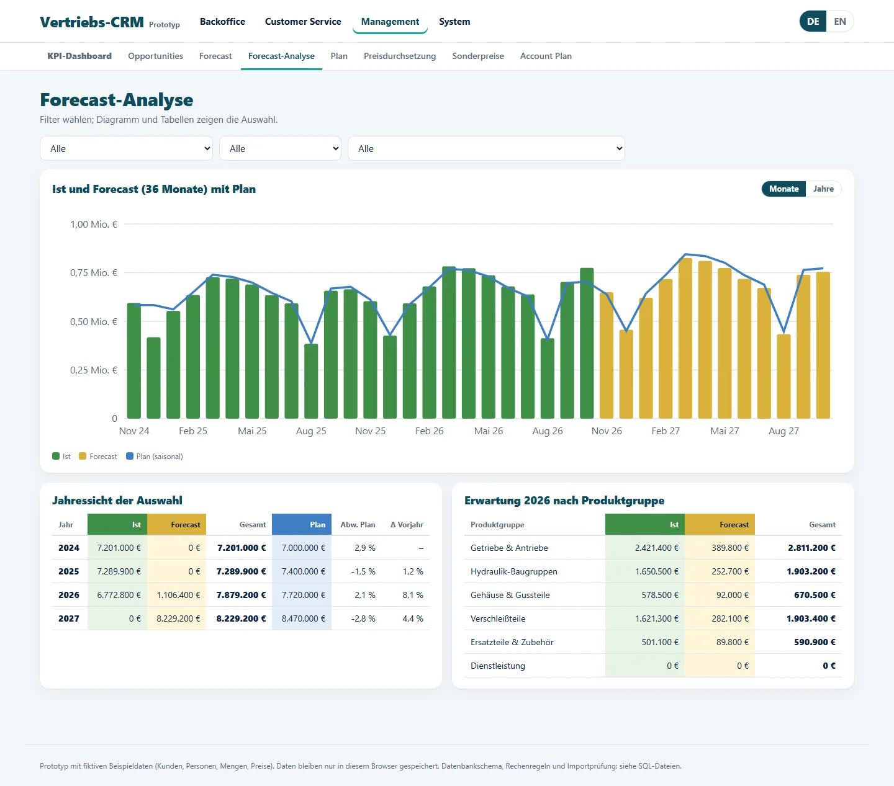
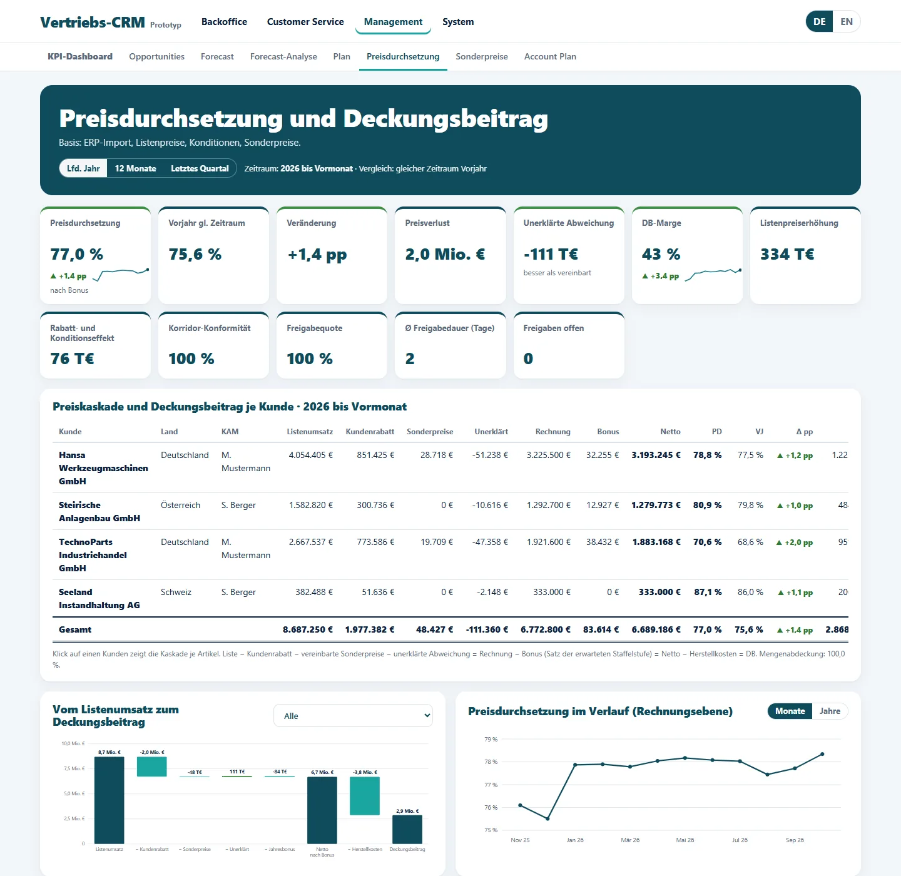

Vertriebs-CRM – Prototyp für den B2B-Vertrieb
Ein schlankes CRM, das Tagesgeschäft im Backoffice, Kundendienst und Management-Steuerung in einem Werkzeug zusammenführt – von der Aufgabe am Morgen bis zur Preisdurchsetzung je Kunde.
Meine Rolle: Fachkonzept aus Vertriebssicht, Kennzahlen- und Rechenlogik, KI-gestützte Umsetzung mit Claude.
Ausgangslage
In vielen mittelständischen B2B-Vertrieben liegen Kundendaten, Angebote, Forecast und Preisentwicklung in getrennten Tabellen. Wer steuern will, sucht Zahlen zusammen, statt mit ihnen zu arbeiten. Der Prototyp zeigt, wie das aus einer Hand aussehen kann – mit den Kennzahlen, die ich aus der Vertriebsleitung kenne.
Vorgehen
- Vier Bereiche – Backoffice, Customer Service, Management, System – mit je einem Dashboard als Einstieg
- Management-Steuerung: KPI-Dashboard, rollierender Forecast, Forecast-Analyse über 36 Monate und saisonaler Jahresplan
- Preisdurchsetzung: Preiskaskade vom Listenumsatz bis zum Deckungsbeitrag, Preiskorridor und Freigaben für Angebotspositionen
- Account Plan als grafische Kundensicht mit Pipeline, Risiken, Gegenmaßnahmen und Zielen
- Service: Anfragen mit Reaktions- und Lösungszielen, Reklamationen nach 8D, Kundenbewertung mit Liefertreue und ppm
Ergebnis
- Lauffähiger Prototyp in einer einzigen HTML-Datei, zweisprachig (Deutsch/Englisch)
- ERP-Import für Monatsumsätze mit Prüfung sowie Archiv gesicherter Stände
- Dokumentiertes Datenmodell als Grundlage für eine spätere Datenbank
- Bewusst keine Online-Demo: gezeigt werden Screenshots mit fiktiven Unternehmen, Personen und Zahlen
Einblicke

Bild vergrößernDaily Dashboard (komplett) 
Bild vergrößernKPI-Dashboard Management (komplett) 
Bild vergrößernAccount Plan: grafische Kundensicht 
Bild vergrößernForecast-Analyse: Ist, Forecast und Plan 
Bild vergrößernPreisdurchsetzung und Deckungsbeitrag


Alle Unternehmen, Personen, Mengen und Preise sind frei erfunden.